워드프로세서-3급(폐지) (2004-05-30 기출문제)
1과목: 워드프로세서 용어 및 기능
1. 다음 행의 처음으로 커서를 이동시키는 것을 무엇이라 하는가?
- 캐리지 리턴(Carriage Return)
- 라인 피드(Line Feed)
- 라인 에디터(Line Editor)
- 레이아웃(Layout)
(정답률: 58%)

2. 다음 중 문서의 특정 부분의 내용을 다른 부분으로 옮기고자(Move)할 때 사용하는 방법으로 옳은 것은?
- 범위선택 → 복사(Copy) → 붙일 부분으로 커서를 이동 → 붙이기(Paste)
- 범위선택 → 잘라내기(Cut) → 붙일 부분으로 커서를 이동 → 붙이기(Paste)
- 범위선택 → [Ctrl]키를 누른 상태에서 선택된 부분을 드래그하여 원하는 곳에 놓는다.
- 범위선택 → 저장하기(Save) → 붙일 부분으로 커서를 이동 → 끼워넣기
(정답률: 70%)
3. 다음 <보기>의 문장에서 사용된 정렬 방법은?
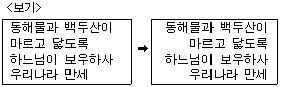
- 왼쪽 정렬에서 양쪽 정렬로 변환
- 왼쪽 정렬에서 오른쪽 정렬로 변환
- 가운데 정렬에서 오른쪽 정렬로 변환
- 오른쪽 정렬에서 왼쪽 정렬로 변환
(정답률: 85%)
4. 안내문과 같이 전체적인 내용은 동일하지만 수신자 이름이나 직업 등과 같이 문서의 일부분만이 다른 여러 개의 문서를 만들고자 할 때 사용하는 기능으로 가장 효율적인 것은?
- 문서 공유
- 복사하기(Copy), 붙이기(Paste)
- 바꾸기(Replace)
- 메일 머지(Mail Merge)
(정답률: 72%)
5. 다음 중 입력장치로만 짝지어진 것은?
- 터치패드 - 스캐너
- 플로터 - 마우스
- OCR - 모니터
- 프린터 - 스캐너
(정답률: 61%)
6. 다음 중 작성한 문서의 페이지 하단에 인용한 문헌의 제목이나 부가되는 설명 등을 나타내는 기능은?
- 두문(Header)
- 각주(Footnote)
- 래그드(Ragged)
- 색인(Index)
(정답률: 71%)
7. 다음은 워드프로세서 편집기능 중 무엇에 대한 설명인가?
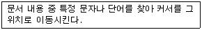
- 치환(Replace)
- 검색(Search)
- 정렬(Sort)
- 워드 랩(Word Wrap)
(정답률: 66%)
8. 다음 중에서 표시장치가 아닌 것은?
- 음극선관(CRT)
- 액정 표시장치(LCD)
- 캐드(CAD)
- 플라즈마 표시장치(PDP)
(정답률: 78%)
9. 다음 중 키보드에서 [Esc] 키의 기능으로 옳은 것은?
- 명령취소
- 최근에 수행한 몇가지의 작업을 되돌리기
- 스타일 적용
- 영역지정
(정답률: 88%)
10. 다음 중 화면상의 커서(Cursor) 혹은 화살표를 움직여 메뉴나 아이콘을 선택하거나 선이나 그림을 그릴 수 있는 입력 도구는?
- 광학 마크 판독기(OMR)
- 스캐너(Scanner)
- 자기 잉크 판독기(MICR)
- 마우스(Mouse)
(정답률: 75%)
11. 다음 중 화면을 위, 아래나 오른쪽, 왼쪽으로 이동시켜 보이지 않는 문서의 내용을 보이게 하는 기능을 가진 것은?
- 상황 표시줄(Status Line)
- 이동막대(Scroll Bar)
- 메뉴표시줄(Menu Bar)
- 눈금자(Ruler)
(정답률: 76%)
12. 다음 중 워드프로세서에서 커서를 이동하는데 사용하는 키가 아닌것은?
- [Home]
- [→]
- [Tab]
- [Delete]
(정답률: 62%)
13. 다음 중 다른 키와 함께 사용되어야만 기능을 수행하는 조합키가 아닌 것은?
- [Ctrl]
- [Alt]
- [Shift]
- [Insert]
(정답률: 76%)
14. 다음 중 화면표시장치의 화면을 구성하는 가장 작은 단위를 무엇이라고 하는가?
- 비트(Bit)
- 픽셀(Pixel)
- 포인트(Point)
- 레코드(Record)
(정답률: 77%)
15. 다음 중 자주 사용되는 단축키에 대한 설명으로 옳지 않은 것은?
- [Ctrl] + V : 붙여넣기
- [Ctrl] + C : 복사하기
- [Ctrl] + X : 이동하기
- [Ctrl] + Z : 실행 취소
(정답률: 74%)
16. 다음 중에서 하나의 화면을 두 개 이상의 영역으로 나누어 문서를 동시에 참조할 수 있는 기능은?
- 격자(Grid)
- 센터링(Centering)
- 스크롤(Scroll)
- 창 나누기(Spilt Screen)
(정답률: 79%)
17. 다음 중 문서의 균형을 맞추기 위해 상, 하, 좌, 우에 공백을 두는 것을 무엇이라고 하는가?
- 마진(Margin)
- 꼬리말(Footer)
- 매크로(Macro)
- 정렬(Sort)
(정답률: 81%)
18. 다음 보기의 내용과 같이 문단의 첫째 줄 맨 앞부분을 안으로 들어가게 하는 기능을 무엇이라고 하는가?
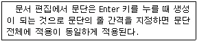
- 여백(Margin)
- 정렬(Alignment)
- 들여쓰기(Indent)
- 내여쓰기(Outdent)
(정답률: 66%)
19. 다음 중에서 문서 편집시 필요없는 부분을 삭제하려고 할 때 사용하는 교정부호는?
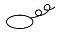
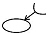
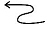
(정답률: 88%)
20. 다음 중에서 문단의 줄을 바꾸는 교정부호는?
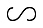
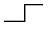
(정답률: 77%)
2과목: PC 운영 체제
21. 다음 중 한글 Windows 98의 [디스플레이 등록 정보] 창에서 바탕 화면의 무늬를 지정할 수 있는 탭 항목은?
- 배경 화면
- 화면 배색
- 효과
- 설정
(정답률: 51%)
22. 한글 Windows 98의 응용 프로그램 내에서 데이터를 복사, 이동시킬 때 사용하는 임시 기억장소는?
- 스풀링
- 클립보드
- 소켓
- 공유
(정답률: 78%)
23. 한글 Windows 98에서 다음의 설명이 의미하는 것은?
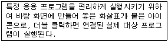
- 제어 아이콘
- 바로 가기 아이콘
- 내 문서 아이콘
- 실행 아이콘
(정답률: 71%)
24. 한글 Windows 98에서 바탕 화면을 여러 사용자마다 다르게 설정할 때 사용하는 [제어판]의 도구는?
- 디스플레이
- 암호
- 시스템
- 내게 필요한 옵션
(정답률: 41%)
25. 다음 중 한글 Windows 98에서 다른 키와 함께 사용되어야만 기능을 수행하는 조합키는?
- [Tab]
- [End]
- [Shift]
- [Delete]
(정답률: 77%)
26. 한글 Windows 98에서 사용하는 창의 제목 표시줄에 가장 왼쪽에 위치한 창 조절 아이콘을 클릭하였을 때, 표시되는 메뉴 항목이 아닌 것은?
- 열기
- 이동
- 최소화
- 닫기
(정답률: 42%)
27. 한글 Windows 98의 [탐색기]에서 선택한 파일을 같은 드라이브의 다른 폴더에 [Ctrl] 키를 누른 상태로 끌어다 놓으면 어떤 명령이 수행되는가?
- 파일의 복사
- 파일의 이동
- 파일의 바로 가기 아이콘 만들기
- 파일의 삭제
(정답률: 65%)
28. 한글 Windows 98의 탐색기에서 파일이나 폴더의 최후에 변경된 날짜를 알고싶다. 폴더 창의 [보기] 메뉴에서 다음 중 어느 것을 선택해야 하는가?
- 자세히
- 폴더 옵션
- 작은 아이콘
- 큰 아이콘
(정답률: 73%)
29. 한글 Windows 98의 [시스템 등록정보] 창에서 하드웨어에 관한 정보 열람이나 변경을 수행하고자 할 때 사용하는 탭은?
- 파일 관리자
- 설치 마법사
- 장치 관리자
- 디스크 관리자
(정답률: 60%)
30. 한글 Windows 98에서 바탕 화면의 바로 가기 메뉴에 있는 아이콘 정렬 방법이 아닌 것은?
- 색상
- 크기
- 종류
- 이름
(정답률: 75%)
31. 다음 중 한글 Windows 98의 파일과 폴더에 대한 설명으로 옳지 않은 것은?
- DOS와는 달리 무제한 길이의 파일 이름을 가질 수 있다.
- 폴더는 계층적 구조를 갖는다.
- 폴더는 수시로 삭제, 이동, 만들기가 가능하다.
- 하나의 폴더 내에는 동일한 이름을 갖는 여러 파일들이 존재할 수 없다.
(정답률: 58%)
32. 한글 Windows 98에서 파일이나 폴더의 복사와 이동에 대한 설명으로 옳은 것은?
- 복사는 파일과 폴더 모두 가능하다.
- 이동은 파일만 가능하다.
- 복사는 폴더만 가능하고 이동은 둘 다 가능하다.
- 복사는 둘 다 가능하고 이동은 폴더만 가능하다.
(정답률: 57%)
33. 한글 Windows 98에서 [휴지통]을 사용하지 않고 완전히 파일을 삭제할 때 사용하는 바로 가기 키는?
- [Ctrl]+[Delete]
- [Shift]+[Delete]
- [Alt]+[Delete]
- [Ctrl]+[Alt]+[Delete]
(정답률: 68%)
34. 한글 Windows 98의 운영체제를 새로이 설치했을 때 바탕 화면에 기본적으로 표시되는 아이콘이 아닌 것은?
- 내 컴퓨터
- 메모장
- 휴지통
- 내 문서
(정답률: 65%)
35. 한글 Windows 98의 탐색기에서 여러 개의 파일을 선택할 경우에 가장 관련이 없는 것은?
- [Shift] 키
- [Ctrl] 키
- 마우스 왼쪽 단추
- [Esc] 키
(정답률: 66%)
36. 다음 중 한글 Windows 98에서 설치되어 있는 응용 프로그램을 제거하려고 할 때 가장 적절한 방법은?
- 해당 프로그램이 있는 폴더를 모두 삭제한다.
- 해당 프로그램이 있는 드라이브를 포맷한다.
- 해당 프로그램의 백업 파일을 삭제한다.
- Uninstall을 하거나 [제어판]에서 [프로그램 추가/제거]를 이용하여 삭제한다.
(정답률: 73%)
37. 한글 Windows 98을 종료하려고 할 때 나타나는 [Windows 종료] 대화상자의 선택 항목이 아닌 것은?
- 시스템 종료
- 시스템 다시 시작
- 인터넷 사용을 위한 다시 시작
- MS-DOS 모드에서 시스템 다시 시작
(정답률: 63%)
38. 다음 중 한글 Windows 98의 [탐색기]에서 사용하는 바로 가기 키로 올바르게 짝지어진 것은?
- 모두선택 : [Ctrl] + [X]
- 붙여넣기 : [Ctrl] + [A]
- 복사하기 : [Ctrl] + [C]
- 잘라내기 : [Ctrl] + [V]
(정답률: 79%)
39. 다음 중 한글 Windows 98에서 기본 프린터를 나타내는 아이콘은?
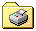
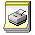
(정답률: 68%)
40. 한글 Windows 98에서 새로운 작업 폴더를 만들려고 한다. 다음 중 어디에서 작업해야 하는가?
- Windows 탐색기
- 프로그램 추가/제거
- 제어판
- 디스플레이
(정답률: 38%)